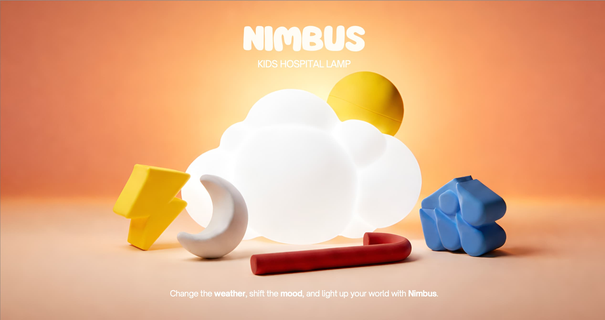
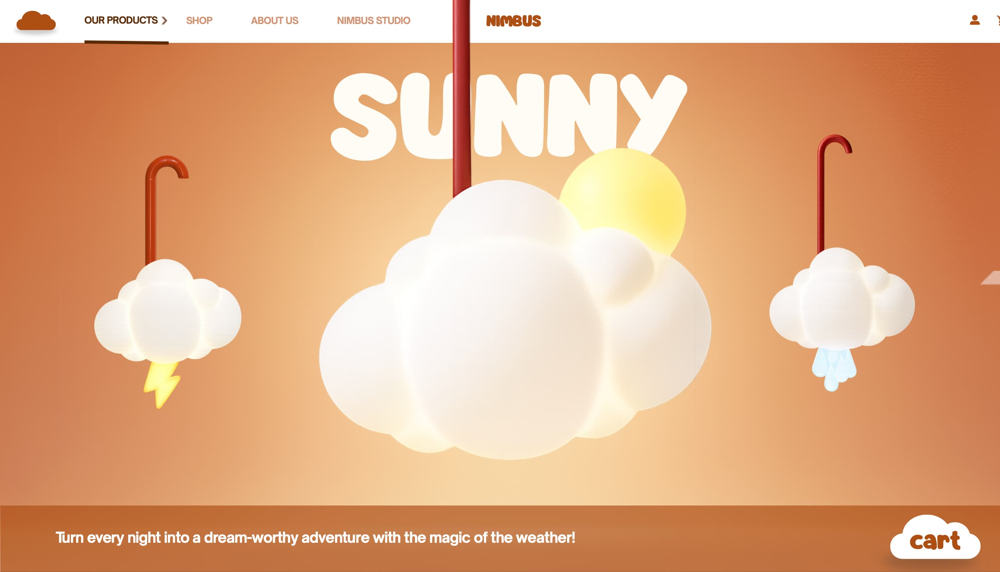
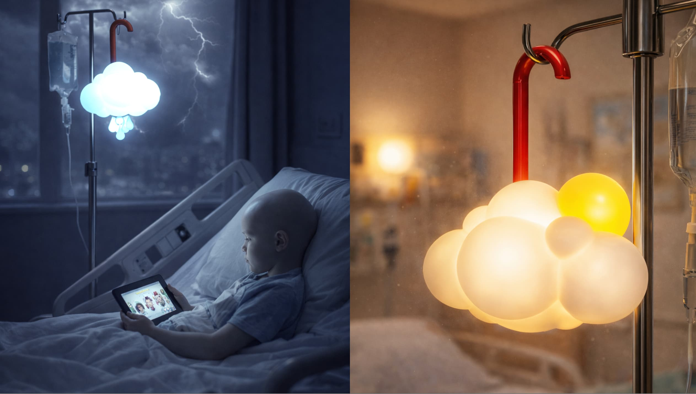
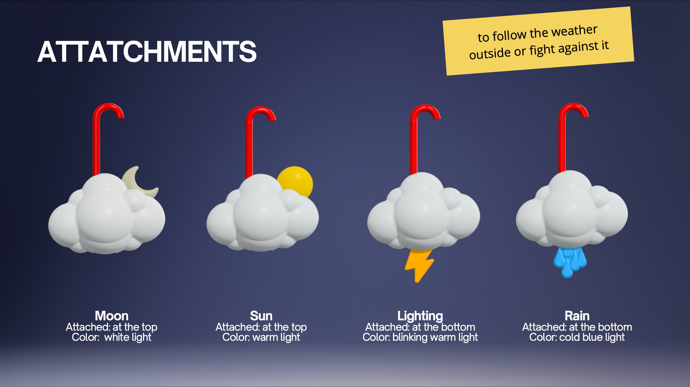

Nimbus
Lámpara para niños hospitalizados que cambia de color según el tiempo

2024–2025
Diseño de producto
Proyecto de asignatura
Rhinoceros, KeyShot
Contexto
Nimbus nace de la necesidad de mejorar el entorno hospitalario de los niños ingresados. El objetivo era diseñar un objeto que conectara al niño con el exterior — el tiempo que hace fuera — sin que pudiera salir a verlo.
Proceso
El sistema se basa en accesorios intercambiables que el propio niño puede colocar: sol para luz cálida, lluvia para luz azul fría, rayo para luz parpadeante y luna para luz blanca. El cuerpo se fabricó en fibra de vidrio y resina epoxi translúcida para difuminar la luz correctamente.
El gancho en PVC rojo permite colgar la lámpara del soporte del suero, integrándola en el mobiliario médico existente sin modificaciones. Se construyó un prototipo físico impreso en 3D.
Resultado
Proyecto en equipo con Alejandra de las Casas y Nil Perez. El prototipo demostró la viabilidad del concepto y la claridad del sistema de accesorios para un usuario infantil.


